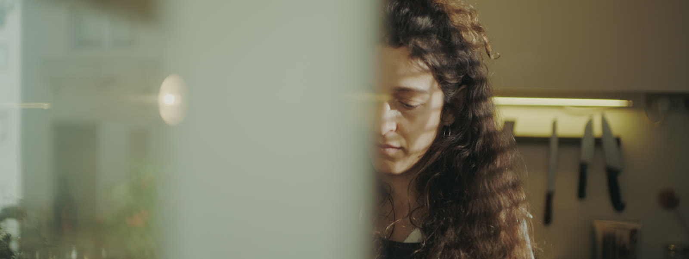
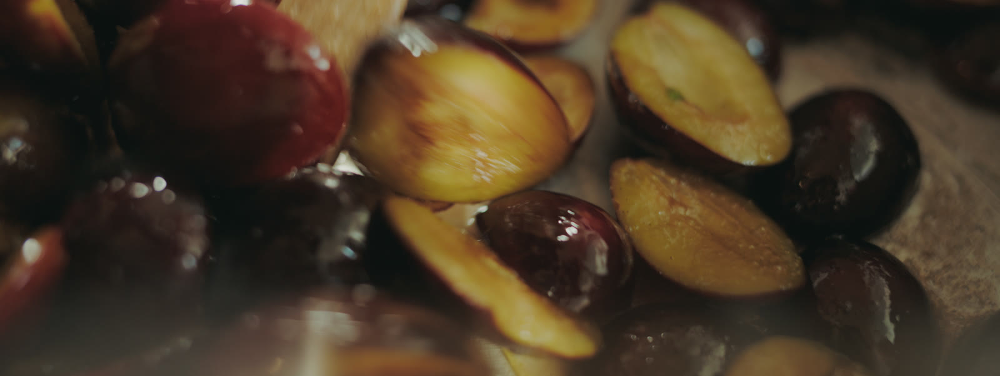
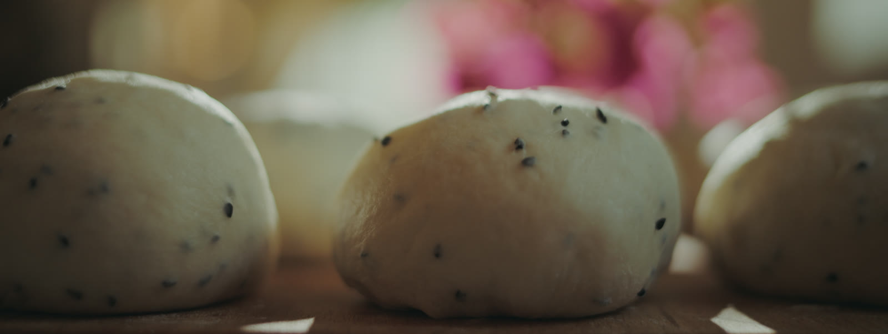

משם אני חושבת ומחשבת איזה חומרי גלם יעבדו הכי טוב ביחד בעונה הזאת, בשבוע הזה, ביום הזה — וישר אני יוצאת ללקט אותם. מי שמכיר אותי יודע שאני לא ממש מחפשת להכין את מה שכולם מכירים, אלא טעמים ושילובים שגורמים לחשוב, לעצור באמצע הביס ולהגיד From there I think through which ingredients will work best together this season, this week, this day — and I go straight out to gather them. Anyone who knows me knows I'm not really looking to make what everyone already knows, but flavors and combinations that make you think, stop mid-bite, and say
אשכרה. Seriously.

כל שבוע יוצא מהמטבח שלי מבחר שמלווה אתכם מיום שישי ולאורך כל השבת — לחם שנפרס כבר ברגע שנכנסתם הביתה ופשוט לא מצליחים להפסיק לאכול ממנו, מאפה מעניין וטעים שרק בא שכולם יטעמו ממנו, או עוגיות מפנקות ששותים קפה רק בשבילן. זאת מאפייה של אישה אחת, ככה שאתם יכולים לדעת בוודאות שמה שאתם בוחרים נעשה באהבה עמוקה והנאה ענקית למקצוע ולאהבת אנשים ואוכל טעים. מה שכן, בגלל זה הכמויות גם מאוד מוגבלות, והכל נגמר מהר. אז יאללה. Every week, a selection leaves my kitchen to keep you company from Friday and right through Shabbat — bread that's sliced the moment you walk in the door and you simply can't stop eating, a pastry interesting and tasty enough that all you want is for everyone to taste it, or indulgent cookies that are the whole reason you make coffee. This is a one-woman bakery, so you can know for certain that whatever you choose was made with deep love and huge enjoyment of the craft and of loving people and tasty food. That said, because of this the quantities are also very limited, and it all runs out fast. So, yalla.
למאפייה של NUIKA To the NUIKA bakeryהפילוסופיה שלי כטבחית ואופה היא שאוכל יכול להיות טעים ברמות לא הגיוניות וגם להיות מאוד נכון ונעים לבטן. בואו נגיד שאם אתם מחפשים מושחת, זה לא המקום. אבל זה כן המקום ללחמים, מאפים ומתוקים שבאמת נכונים לגוף ובאותה עת טעימים לא נורמלי. My philosophy as a cook and a baker is that food can be outrageously delicious and also genuinely good and gentle on your stomach. Let's just say if you're looking for decadent, this isn't the place. But it is the place for breads, pastries and sweets that are truly good for the body and, at the same time, insanely tasty.